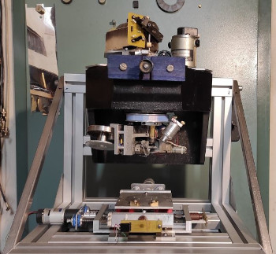
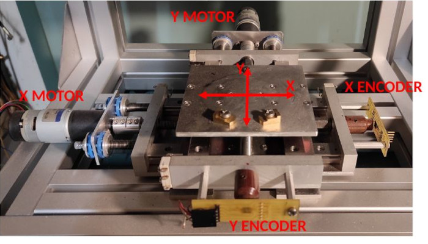

Mechanical description
Introduction
Original frame
As it was reported in an image in the project overview, the original bonding machine is essentially a bulky 4-axis robot. It's composed of two main elements:
- The heated bed: it allows for horizontal movement of along the X and Y axes;
- The machine head: it's mounted at a fixed height, but its internals can move vertically along Z and can also rotate along θ.
- How can we achieve micrometer precision while keeping costs sufficiently down?
- How do we stop the bed from smashing accidentally against the metal frame? How do we prevent over-rotation of the machine head?
- How do we set the zeros of X, Y, Z and θ reliably?
Current state
 The current state of the machine frame is depicted in the image on the side. The frame which supports the machine head was built from scratch, together with the motor mounts, the travel limiting sensors and the encoders’ mounts. [TODO]: qua è da riscrivere, l'ho lasciato com'era originariamente
X, Y, Z, θ axes detail
